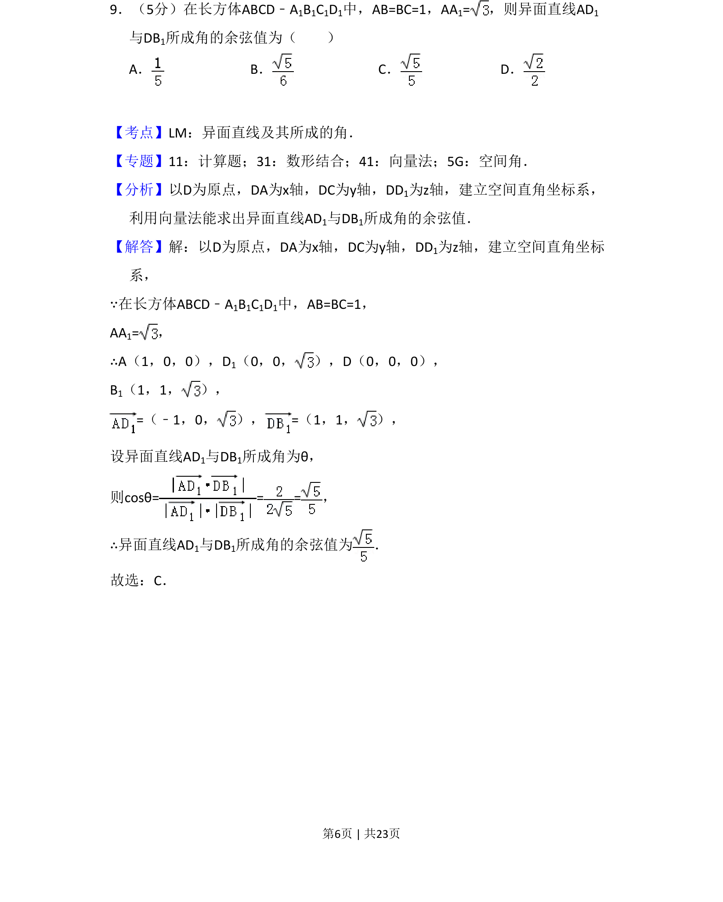
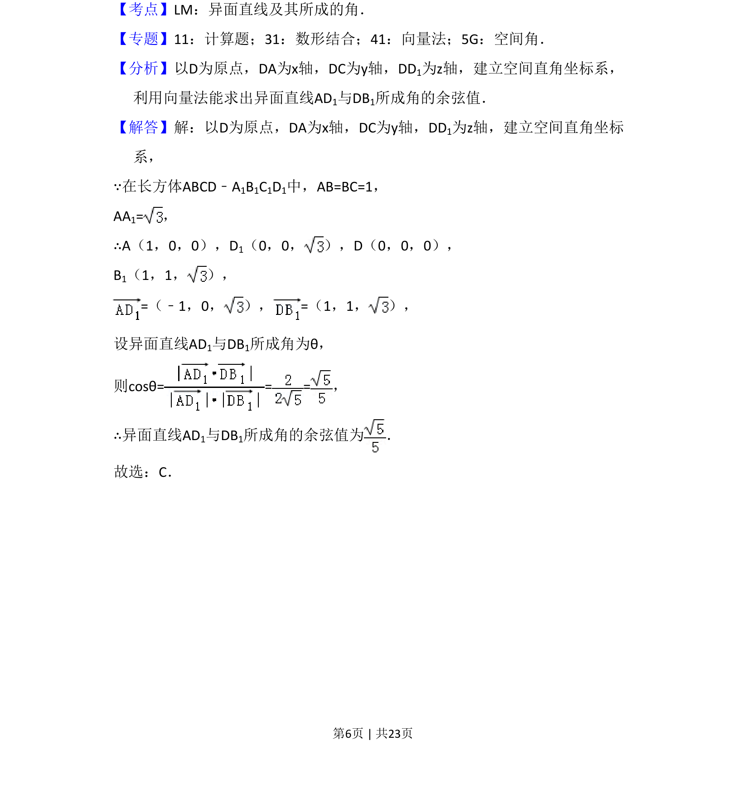
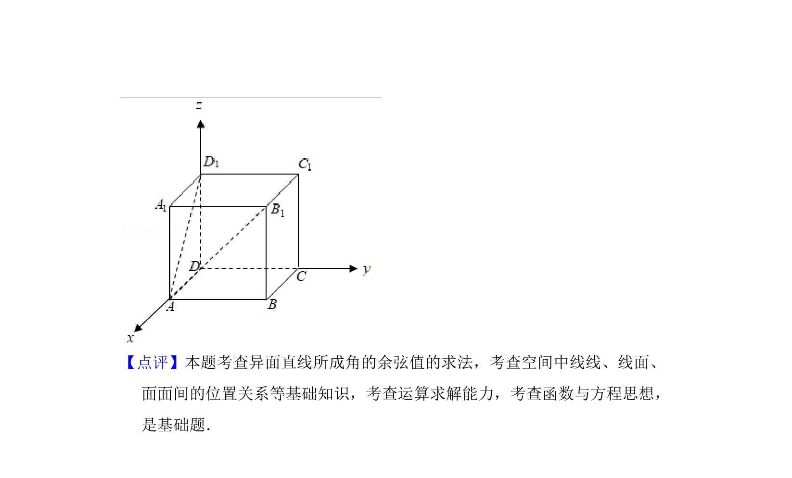

考点：异面直线所成角 向量法 空间直角坐标系

长方体中以向量法求异面直线AD1与DB1所成角的余弦值。


📄 原 PDF 第 6 页：
素材/真题/吉林/2008-2024·（吉林）数学高考真题/2018年高考数学试卷（理）（新课标Ⅱ）（解析卷）.pdf
9．（5分）在长方体ABCD﹣A1B1C1D1中，AB=BC=1，AA1=，则异面直线AD 1 与DB1所成角的余弦值为（ ） A．B．C．D．
【考点】LM：异面直线及其所成的角．菁优网版权所有 【专题】11：计算题；31：数形结合；41：向量法；5G：空间角． 【分析】以D为原点，DA为x轴，DC为y轴，DD1为z轴，建立空间直角坐标系， 利用向量法能求出异面直线AD1与DB1所成角的余弦值． 【解答】解：以D为原点，DA为x轴，DC为y轴，DD1为z轴，建立空间直角坐标 系， ∵在长方体ABCD﹣A1B1C1D1中，AB=BC=1， AA1=， ∴A（1，0，0），D1（0，0， ），D（0，0，0）， B1（1，1， ）， =（﹣1，0， ），=（1，1， ）， 设异面直线AD1与DB1所成角为θ， 则cosθ== =， ∴异面直线AD1与DB1所成角的余弦值为 ． 故选：C．